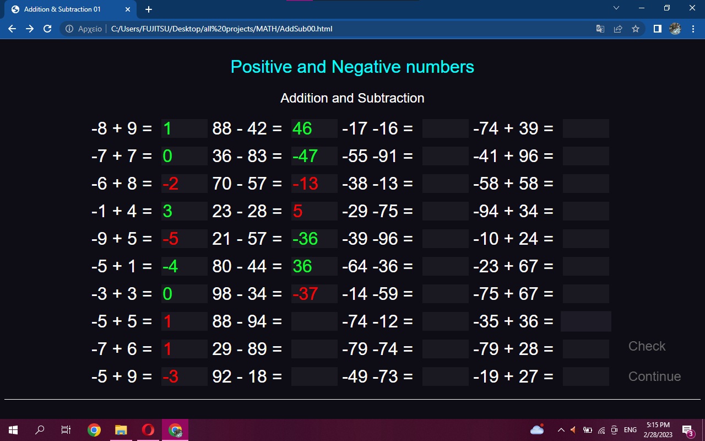
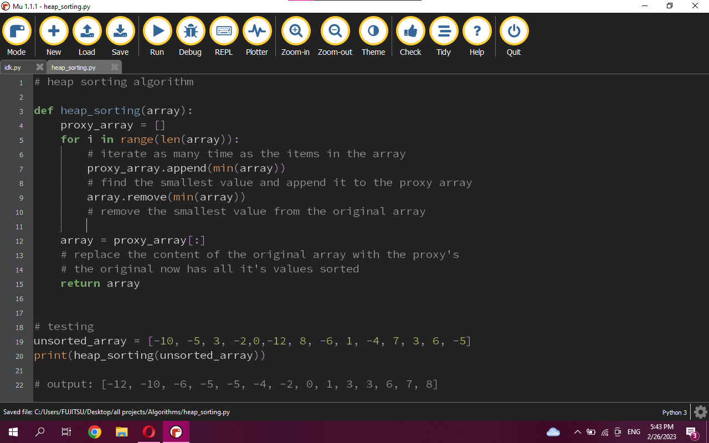
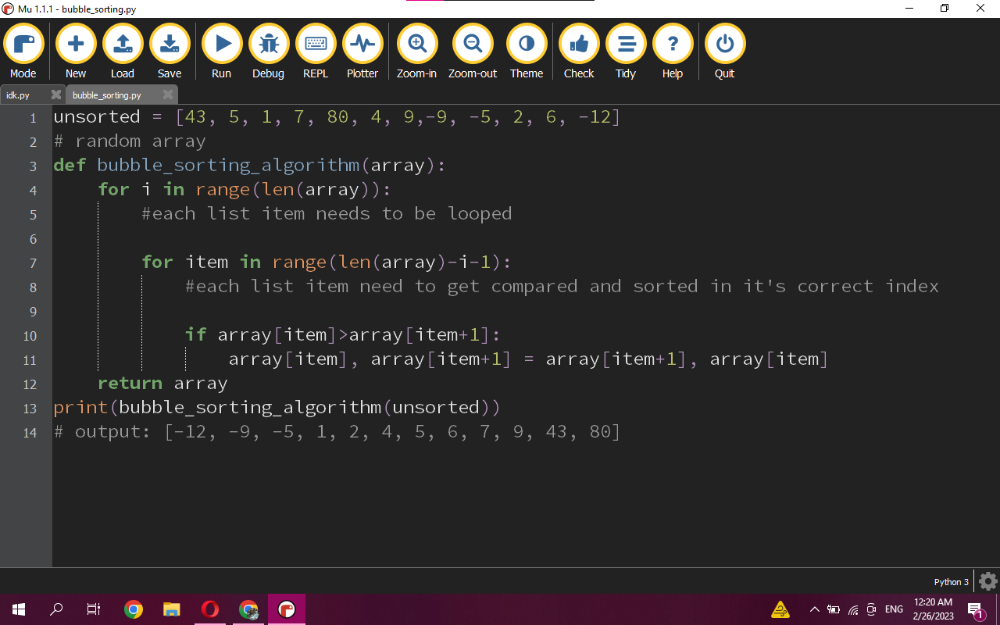
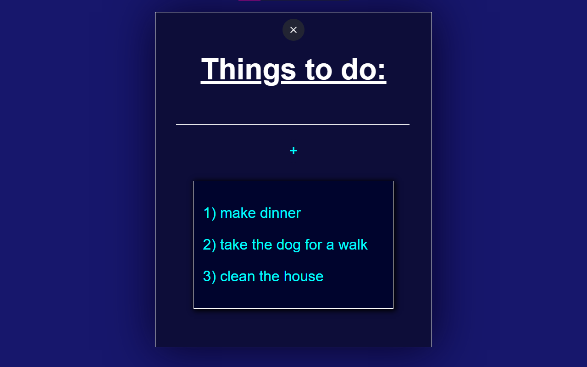
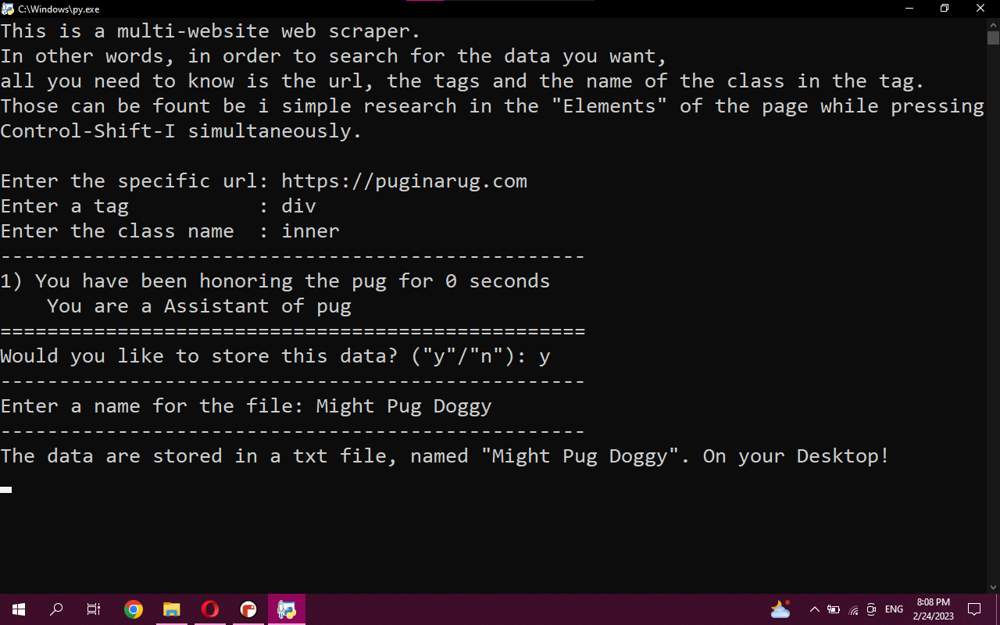
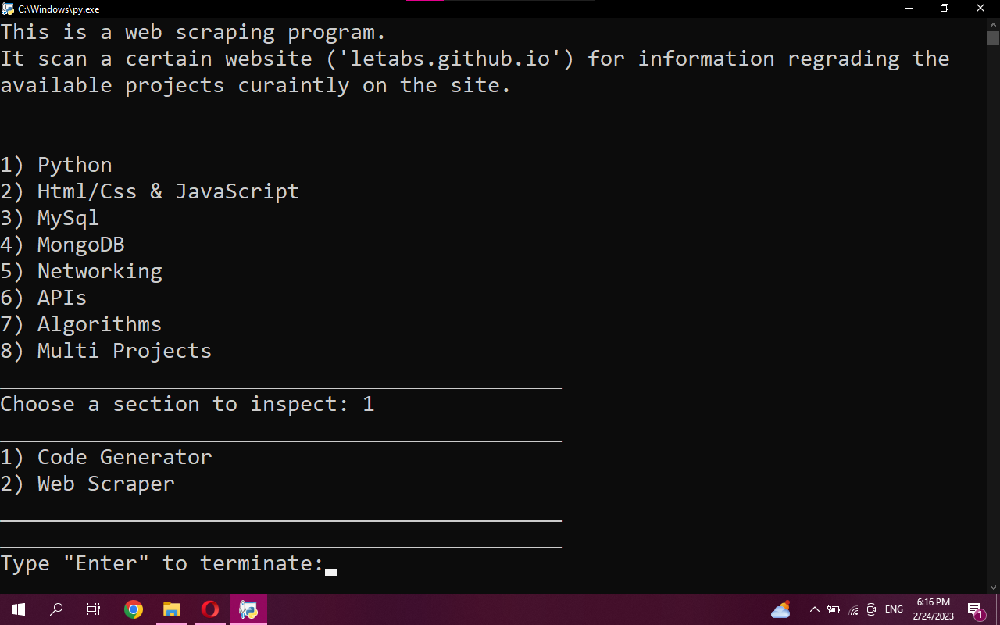
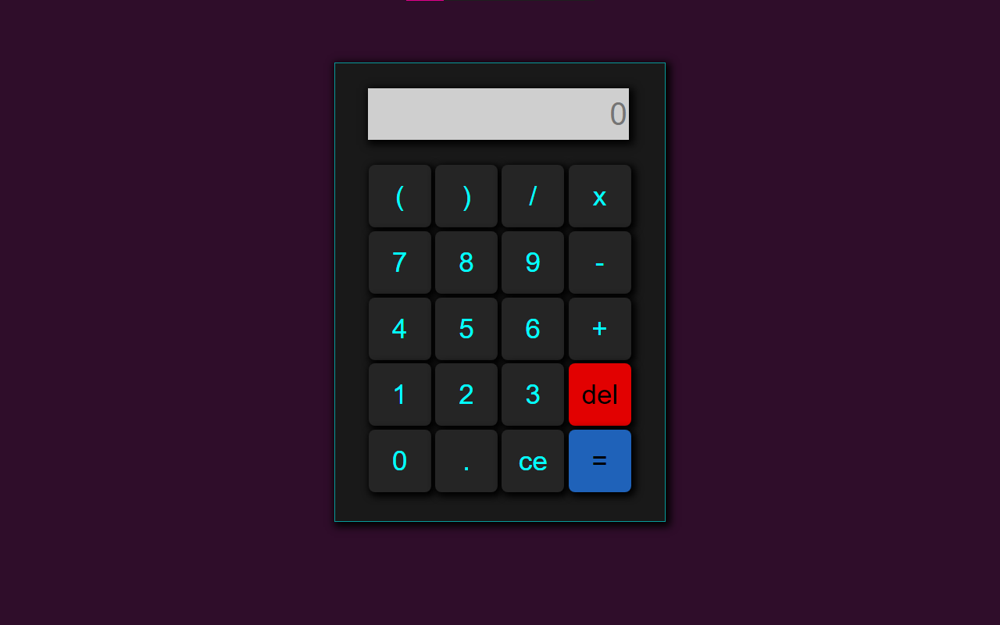
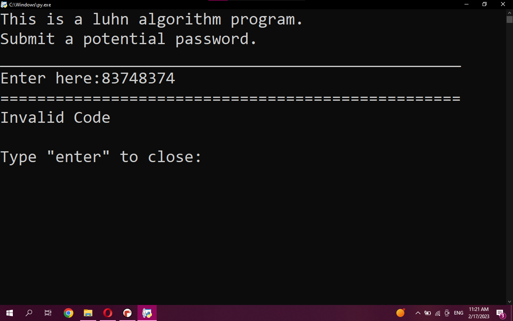
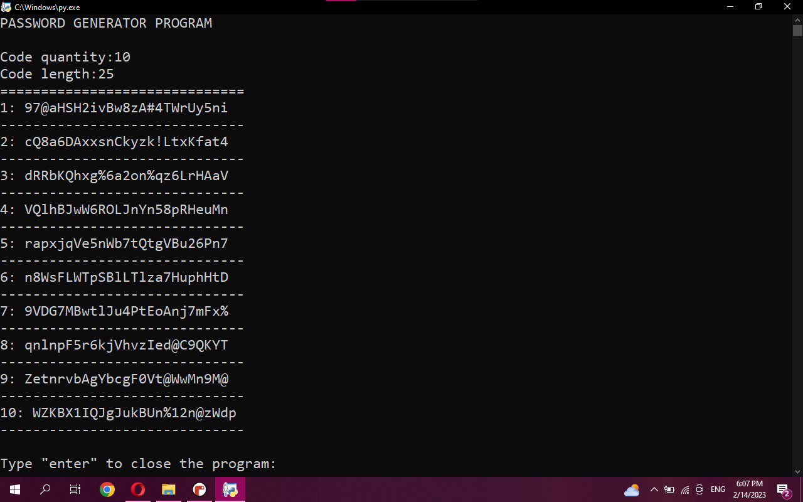

Math Practice UI
This project is basically a web page for mathematics practice, starts with simple calculations with positives and negatives. Future sections will include more complex mathematical operations. The user awnsers the operations and checks if they are true or false. Created with html/css & avascript

Date: 02/27/2023
Heap Sorting Algorithm
The heap sorting algorithm is also sorting algorithm. It works by finding the smallest or largest value and placing it to the beggining and the end of the array rescpectively. This keeps repeating for the rest values in the array.

Date: 02/26/2023
Bubble Sorting Algorithm
The bubble sorting algorithm is a sorting algorithm, as it's name suggests. Each item in a list is compared to the next item, if the first is bigger than the second, they switch places and the same procces is repeated. The bsa isn't really suitable for large data sorting due to the very nature of it.

Date: 02/26/2023
To Do List
Wanted to get back to some JavaScript, i resorted into a single page that functions as a task list with a local Storage managment system. In other words, the task that the user submits or removes from their list are maintained withing the browser, even if the browser is closed and reopened at a later time. (no personal data login required)

Date: 02/25/2023
General Web Scraper
Simillar to the previous script, this is also a web scraper but the different lies to variaty of the websites this ws can be used for. Unlike the fixed ws that is only specific to a website, this one can be used on pretty much every page. The user inputs the url, tag and the class name within the tag and the program returns the data as text, that can also be stored in a file.

Date: 02/23/2023
Fixed Web Scraper
Following the Ui Calculator,a python web scraper takes place. A Web scraper is a program that extracs information from a web page. The requests module have it's own requiremnts that can be found in the cmd using "pip show". In addition, other parsers work too like "lxml", etc. Lastely, it's a good practice to have the required files, like modules, all in the same directory For the creation of it, there are the following requirments: bs4 (BeautifulSoup4 module) requests (module) html.parser

Date: 02/23/2023
Calculator (UI)
A simple Calculator script with a friendly UI. Used mainly JavaScript, along side with html and css. Can be found in the Front End section.

Date: 02/20/2023
Luhn Algorithm
Created a luhn algorithm using python. A luhn algorithm is a proccess on wich a collection of numbers gets checked for validation. In other words, if a code/password is good enough to be chosen. The luhn algorithm is used for credit card numbers, SIRET, etc. and it's made in a way so that if a part of the password is missing, the visible part may be significant enough to guess it.

Date: 02/17/2023
Python Code Generator
A simple password generator program using python. Takes a quantity and a length for the wanted password and returns a respective output.

Date: 02/14/2023